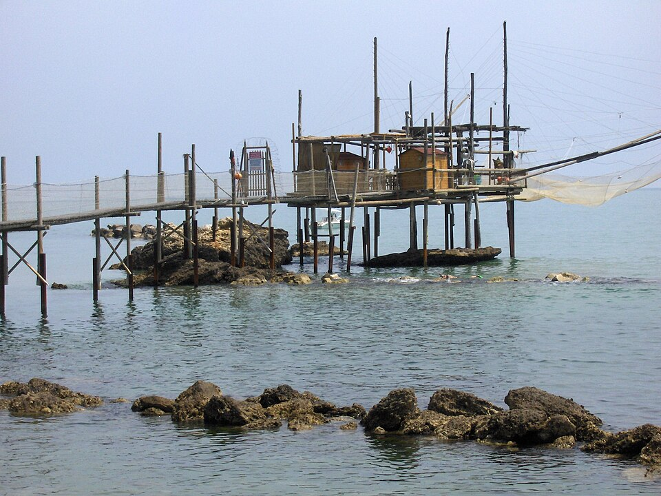
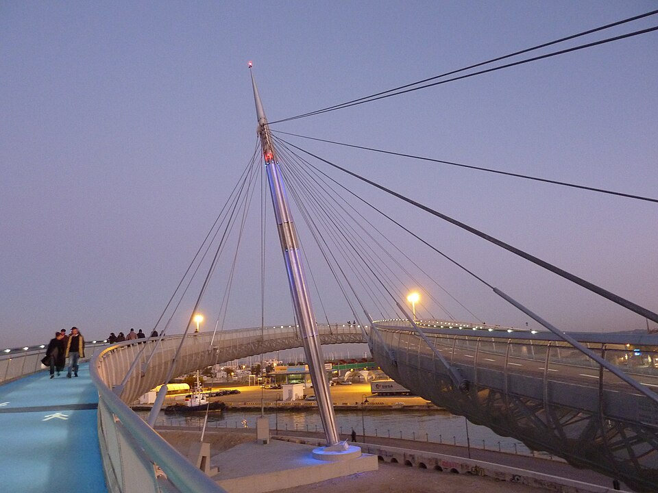
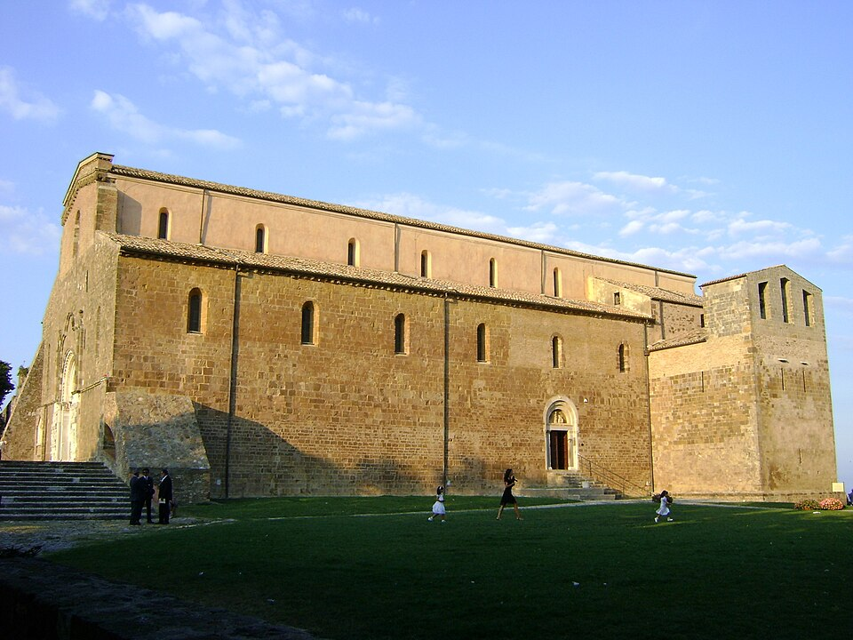
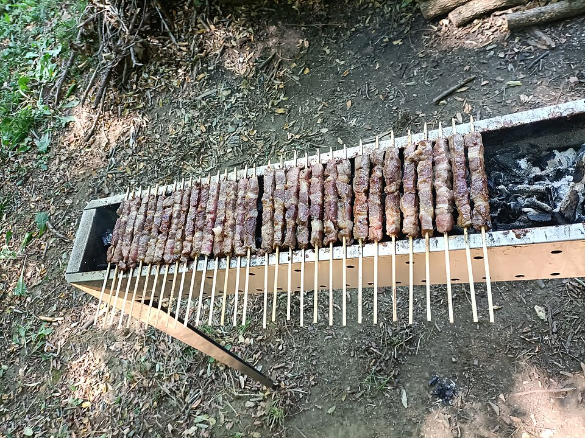
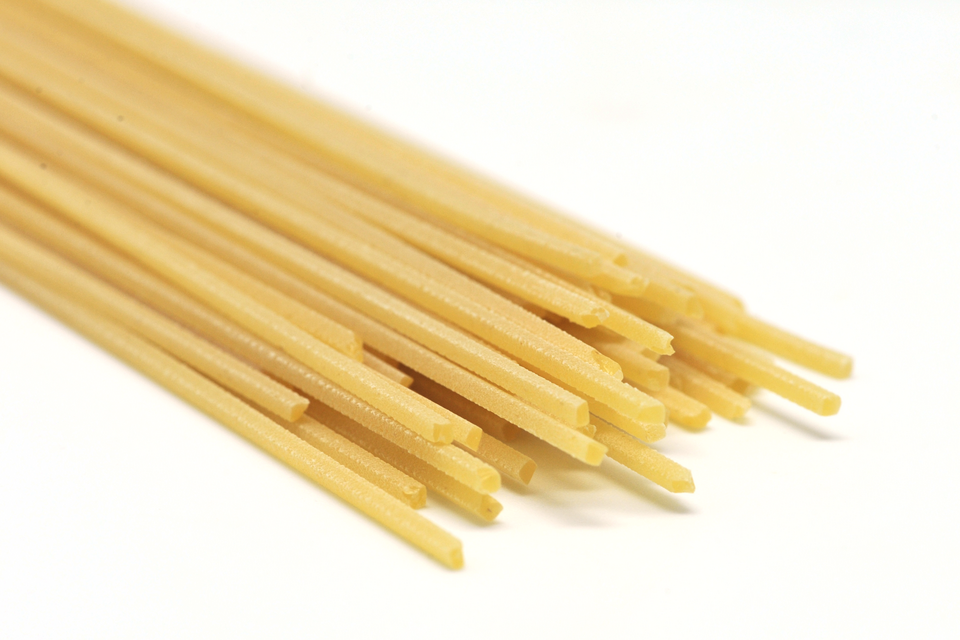
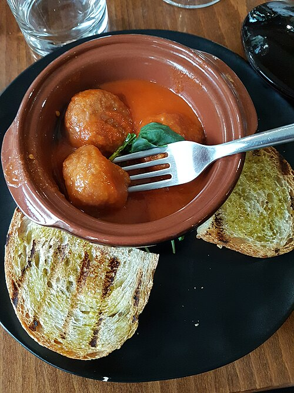
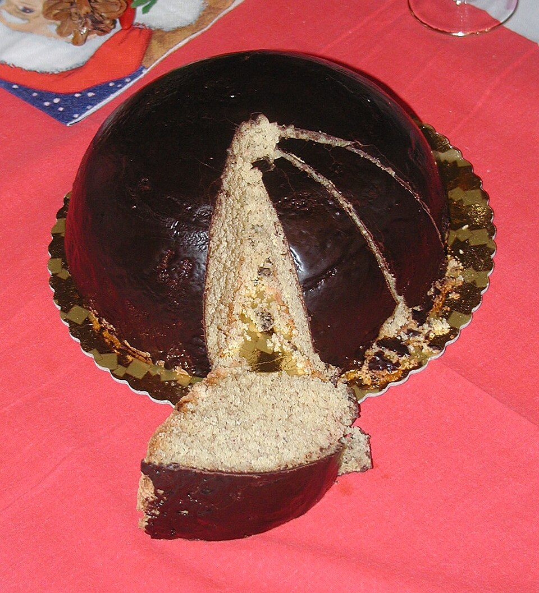
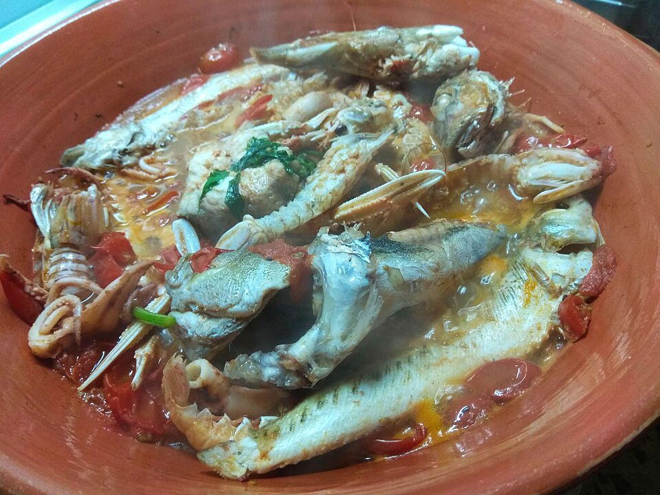

Przechowalnia bagażu nie jest elementem krytycznym planu. W piątek przed check-inem i w niedzielę po checkout możecie po prostu nosić małe plecaki ze sobą. Na plaży nie zostawiajcie ich bez opieki — przy kąpieli jedna osoba pilnuje rzeczy albo korzystacie z lido/szafki, jeśli jest dostępna.
GŁÓWNY PUNKT WEEKENDU
Sobota: Costa dei Trabocchi
Pociąg do San Vito, e-bike wzdłuż dawnej linii kolejowej, kąpiel przy Trabocco Turchino i XI-wieczne opactwo San Giovanni in Venere.

🚆 Pociąg bez stresu
07:47 → 08:19 Pescara Centrale → S. Vito-Lanciano, pociąg 90459.
18:25 → 18:55 S. Vito-Lanciano → Pescara Centrale, pociąg 90486.
Brak rezerwacji miejsc. Siadacie na dowolnym wolnym miejscu.
🧭 Plan w 20 sekund
Piątek: plaża + Pescara + ryby.
Sobota: Costa dei Trabocchi + rowery + opactwo + arrosticini.
Niedziela: plaża + kuchnia Abruzji + Aurum + Pineta + lot.
PRZED WYJAZDEM
Rezerwacje i przygotowanie
Otwórz adres aplikacji w Safari → Udostępnij → Dodaj do ekranu początkowego. Przed wyjazdem otwórz wszystkie zakładki raz z internetem. Tekst, zdjęcia, plan i adresy zostaną w pamięci offline; zewnętrzne Google Maps i strony rezerwacyjne wymagają sieci.
PIĄTEK · 7 SIERPNIA
Pierwsze morze + Pescara
✈️ Lądowanie — Abruzzo Airport
Tylko bagaż podręczny, więc celem jest kurs TUA4FLY o 11:10.
🚌 TUA4FLY → Pescara Centrale
Bilet: 3 € / os. · kupno w TuaGO lub kartą w autobusie. Dojazd do centrum mniej więcej 20 minut.
🎒 Dworzec → apartament
Około 8–10 min pieszo. Jeśli gospodarz nie przyjmie plecaków wcześniej, po prostu zabieracie je dalej — nie zmieniamy planu.
🏠 Corso Vittorio Emanuele II 180, Pescara
🏖️ Plaża #1 — Pescara Centro
Szeroki piasek, łagodne wejście do morza, pełna infrastruktura. Na 1,5–2 h wystarczą ręczniki i bezpłatny odcinek plaży.
🏠 Check-in + prysznic
Odpoczynek do ok. 16:30.
🚶 Najlepszy spacer po Pescarze
Piazza Salotto → promenada → Ponte del Mare → Piazza Garibaldi / Pescara Vecchia.

Ponte del Mare: 466-metrowy pieszo-rowerowy most z 2009 r.; symbol współczesnej Pescary i dobry punkt na panoramę Adriatyku oraz, przy dobrej widoczności, gór Abruzji.
Pescara Vecchia: okolice Corso Manthonè i Via delle Caserme — mała, najstarsza część miasta, najlepsza właśnie wieczorem.
🍫 Opcjonalnie: Parrozzo
Jeśli macie ochotę, zahaczcie o okolice Piazza Garibaldi / Ritrovo del Parrozzo i kupcie lokalny deser na później.
🐟 Kolacja — Chitarrina Osteria di Pesce
Pescara Vecchia. Polujcie na lokalne ryby i owoce morza; jeśli mają — zapytajcie o brodetto pescarese. Do tego Pecorino d'Abruzzo albo Cerasuolo.
Via delle Caserme 54
SOBOTA · 8 SIERPNIA
⭐ Costa dei Trabocchi
Najwygodniej kupić wcześniej w Trenitalia (strona/aplikacja) albo TuaGO. Można też w kasie/automacie na stacji. Zakup u obsługi w pociągu jest awaryjny i wiąże się z dopłatą +5 €. Nie ma numerowanych miejsc ani rezerwacji siedzeń — to pociąg regionalny, siadacie tam, gdzie jest wolne.
☀️ Pobudka
Espresso + cornetto w pobliżu apartamentu.
🚆 Regionale 90459
Pescara Centrale → S. Vito-Lanciano · ok. 32 min.
Sprawdźcie kurs jeszcze wieczorem w piątek i rano w sobotę w Trenitalia/TUA — rozkład jest planowy, a operacyjne zmiany są możliwe.
🚲 Odbiór e-bike'ów — San Vito Marina
Wariant 1: Seaside Escape Bike Rental — łatwa rezerwacja online; e-bike full day ok. 40 €, kask i zapięcie w cenie. Wariant 2: La Pergamena — lokalny punkt wymieniany przez gminę przy wydarzeniach na Via Verde.
🚲 Via Verde → Trabocco Turchino
Jedziecie na południe po trasie dawnej linii kolejowej. Morze, tunele, zatoczki i kolejne trabocchi.
Trabocco: historyczna drewniana platforma rybacka na palach, z długimi ramionami służącymi do opuszczania sieci.
🏖️ Plaża #2 — Calata Turchino
Mała, kamienisto-żwirowa zatoczka i bardziej „dzikie” wybrzeże niż miejska Pescara. To dobry moment na pierwszą dłuższą kąpiel.
🚲 Via Verde na południe → Fossacesia Marina
Bez ścigania. Zatrzymujcie się przy trabocchi, punktach widokowych i zejściach nad wodę.
🥗 Lekki lunch — Fossacesia Marina
Nie robimy długiego obiadu na restauracyjnym trabocco. Coś lekkiego przy morzu, zimny napój i ruszacie do opactwa.
⛪ Abbazia di San Giovanni in Venere

Benedyktyńskie opactwo wysoko nad Adriatykiem. Początki średniowiecznego kompleksu wiązane są z ok. 1015 r. Największy bonus: widok z góry na Costa dei Trabocchi.
Godziny w sezonie: sobota 08:30–20:00 · rezerwacja nie jest wymagana.
🚲 Powrót Via Verde na północ
Wracacie do San Vito. Google Maps traktujcie orientacyjnie — na miejscu trzymajcie się oznaczeń Via Verde dei Trabocchi.
🏖️ Ostatnia kąpiel
Wybierzcie zatoczkę po drodze, zamiast wracać koniecznie na tę samą plażę.
🚲 Oddanie rowerów
Potem spokojnie na stację.
🛍️ Mercatino Pescara
Dokładnie na Waszym Corso: antyki, vintage, rękodzieło i produkty lokalne. Oficjalnie 17:00–23:00 między Via Genova a Corso Umberto I.
🐑 Arrosticini — Rostelle and Co.
Wieczór na najbardziej charakterystyczne abruzyjskie szaszłyki z mięsa owczego, pieczone tradycyjnie na wąskiej fornacella.

Via Leopoldo Muzii 67
🌙 Mercatino + centrum
Druga runda targu i spokojny wieczór prawie pod apartamentem.
NIEDZIELA · 9 SIERPNIA
Pescara + kuchnia Abruzji
W planie przyjęty jest checkout o 10:00 — do potwierdzenia z gospodarzem. Ponieważ macie tylko małe plecaki, nie potrzebujecie przechowalni: możecie zabrać je ze sobą przez resztę dnia. Jeśli gospodarz pozwoli zostawić je w apartamencie, traktujcie to tylko jako wygodny bonus.
☕ Śniadanie
Krótko, po włosku — kawa i coś słodkiego.
🏖️ Plaża #3 — Pescara
Ostatnia szybka kąpiel. Po sobotnim wybrzeżu nie ma sensu tracić czasu na dodatkowe transfery.
🏠 Checkout
Plecaki na plecy i dalej. Jeśli gospodarz je przechowa — odbierzecie je ok. 20:45.
☕ Centrum / kawa / leniwy spacer
Bez dokładania muzeów „dla samego zaliczenia”. Zostawcie sobie spokojniejszy rytm przed obiadem.
🚶 Spacer na południe
Powoli w stronę Aurum i Pineta Dannunziana. Jeśli jest bardzo gorąco, zatrzymajcie się na granitę i skróćcie spacer.
🏛️ Aurum
Dawny kompleks związany z produkcją lokalnego likieru Aurum, dziś centrum kultury. Latem: 09:00–13:00 i 16:00–19:30, wstęp bezpłatny.
🌳 Pineta Dannunziana
Fragment dawnego nadmorskiego lasu piniowego — zielony kontrast dla współczesnej Pescary. 45–60 min wystarczy.
🌊 Powrót nad morze + aperitivo
Ostatni spokojny fragment weekendu nad Adriatykiem.
🥪 Lekka kolacja
Bez dużego posiłku tuż przed lotem — panino, focaccia, pizza al taglio albo coś lekkiego przy centrum.
🎒 Ewentualny odbiór plecaków
Tylko jeśli zostawiliście je u gospodarza. W przeciwnym razie ten punkt znika.
🚕 Taxi → lotnisko
Cel: być na lotnisku ok. 21:45–21:50, czyli około 1,5 h przed lotem.
Autobus nie pasuje: niedzielny TUA4FLY ma sensowny wcześniejszy kurs o 19:50, a następny 22:00 jest za późny.
✈️ Wylot do Wrocławia
Jeśli po piątku uznacie, że w niedzielę chcecie inną piaszczystą plażę, można rano podjechać do Francavilla. Domyślnie zostajemy jednak w Pescarze, żeby nie marnować czasu na dojazdy.
ABRUZZO FOOD QUEST
6 rzeczy do spróbowania
Małe szaszłyki z mięsa owczego, pieczone na długiej, wąskiej fornacella. Jeden z kulinarnych symboli Abruzji.
Sobota · Rostelle and Co.
Jajeczny makaron cięty na metalowych strunach specjalnej „gitary”; nitki są kwadratowe i bardziej sprężyste niż spaghetti.
Niedziela · L'Abruzzo A Tavola
Kulki z sera, jaj i pieczywa, zwykle smażone, a potem duszone w pomidorach. Klasyczna abruzyjska cucina povera.
Niedziela · L'Abruzzo A Tavola
Pescarski deser: półkuliste ciasto migdałowe pod czekoladową polewą, silnie związane z miastem i Gabrielem D'Annunzio.
Piątek · okolice Ritrovo del Parrozzo
Adriatycki gulasz/zupa rybna. Każdy odcinek wybrzeża ma własną odmianę — w Pescarze pytajcie konkretnie o brodetto pescarese.
Zdjęcie pokazuje wariant alla vastese — inną abruzyjską odmianę.🍷
Cerasuolo d'Abruzzo — wyraziste rosato · Pecorino — białe · Montepulciano d'Abruzzo — czerwone · genziana — gorzki digestivo.
TRANSPORT · OFFLINE · PLAN B
Praktyczne info
🚆 Jak kupić bilet Pescara ↔ San Vito?
- Najprościej online: strona lub aplikacja Trenitalia; alternatywnie TuaGO.
- Na stacji: kasa lub automat samoobsługowy.
- W pociągu: możliwe awaryjnie, ale TUA przewiduje dopłatę +5 €.
- Miejsca: to pociągi regionalne bez rezerwacji miejsc. Wchodzicie i siadacie tam, gdzie jest wolne.
- Walidacja: papierowy bilet skasuj przed wejściem; w TuaGO aktywuj przed wejściem. Przy bilecie cyfrowym kupionym w Trenitalia kierujcie się statusem biletu w aplikacji.
🚌 TUA4FLY
Piątek: lotnisko 11:10 → centrum. Jeśli nie zdążycie: taxi.
Niedziela: autobus nie pasuje do lotu 23:20 — wybieramy taxi ok. 21:20–21:25.
Bilet: 3 €; TuaGO lub płatność kartą na pokładzie. TUA ostrzega, że rozkład nie jest przesuwany pod opóźnione loty.
🌧️ Gdyby pogoda się zepsuła
Museo delle Genti d'Abruzzo
Najlepszy regionalny backup: historia i kultura mieszkańców Abruzji, a nie ogólne muzeum miejskie.
Wasz weekend: piątek 10:00–14:00 · sobota 17:30–21:30 · niedziela zamknięte.
📱 Jak mieć to naprawdę offline?
1. Aplikację opublikujcie na HTTPS (najłatwiej GitHub Pages).
2. Otwórzcie ją raz w Safari przy internecie.
3. Udostępnij → Dodaj do ekranu początkowego.
4. Otwórzcie wszystkie zakładki raz — service worker zapisze pliki lokalnie.
5. Osobno pobierzcie mapę offline w Google Maps: Pescara–Fossacesia.
W aplikacji offline zostaną: harmonogram, adresy, zdjęcia, numery pociągów, opisy, checklisty i linki. Zewnętrzne strony oraz aktualna nawigacja Google Maps potrzebują internetu.
📍 Najważniejsze adresy
Apartament
Corso Vittorio Emanuele II 180, Pescara
Chitarrina Osteria di Pesce
Via delle Caserme 54, Pescara
Rostelle and Co.
Via Leopoldo Muzii 67, Pescara
L'Abruzzo A Tavola
Viale Gabriele D'Annunzio 41, Pescara
La Pergamena
Via Feltrino 32, San Vito Chietino
Abbazia San Giovanni in Venere
Fossacesia, CH
🖼️ Zdjęcia i licencje
Aplikacja przechowuje zdjęcia lokalnie, aby były dostępne offline. Źródła: Wikimedia Commons.
- Ponte del Mare: Gianni o O — CC BY-SA 4.0.
- Trabocco: Wikimedia Commons — CC BY-SA 3.0.
- Abbazia di San Giovanni in Venere: Zitumassin — Public Domain.
- Arrosticini: Superchilum — CC BY 4.0.
- Pallotte cacio e ova: Bultro — CC BY-SA 4.0.
- Maccheroni alla chitarra: Popo le Chien — CC0.
- Parrozzo: Ra Boe — CC BY-SA 2.5.
- Brodetto alla vastese: Jtorquy — CC BY-SA 4.0.